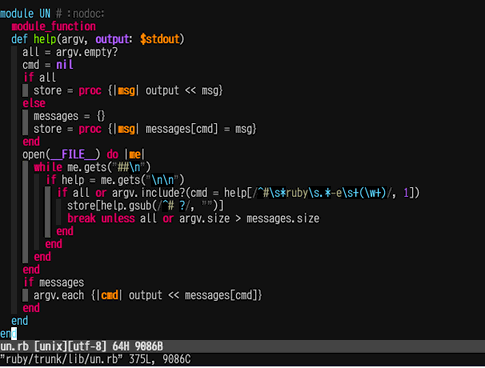

〜2014年4月上旬〜
150通。なんか激減してるな。
sh系では普通
% dash -c 'foo="a b c"; set $foo; echo $1' a % bash -c 'foo="a b c"; set $foo; echo $1' a
のように分割されるが、zshではその処理が入らないため
% zsh -c 'foo="a b c"; set $foo; echo $1' a b c
となってしまう。
FAQにもなっている。
でも結構コマンドラインで悩むことがある。
仕様なのでsetopt sh_word_splitしておくぐらいしかない。
IFSを使った分割も同じことが言える。
% zsh -c 'PACKAGE_VERSION=0.7.2; IFS=.; set $PACKAGE_VERSION; echo $1' 0.7.2 % zsh -c 'PACKAGE_VERSION=0.7.2; setopt sh_word_split; IFS=.; set $PACKAGE_VERSION; echo $1' 0
まあ、configureをzshで動かす人はあまりいないだろう。
ちょっとrtorrentを使ってみたが、設定ファイルの書き方が変態すぎる。
それとmanに書いてある情報が古すぎてすでに使えないとか開発も滞ってるんじゃないかな。
これで停止した位置から再生できるようになった。
あとノイズとか変換待ちとかも解消されてるらしいが確認してない。
そういえば停止してから録画リストが出るまで20秒ぐらいかかっていたが、4秒とかなり速くなった。
とはいえまだ遅いが。
そうそう、これかなりたちが悪くて電源ボタンでOFF/ONしても消えない。
電源ボタンといいつつもスタンバイにしかならないので、そんなもんかという気もするが、
リセットボタンを押すのはちょっと躊躇する。
で、Xvieリモートから操作したら簡単に消えた。
それにしてもBIOS画面を出すみたいなタイミングだったのかい。
Q1 num-utilsのnumsumを使うと簡単。
% echo 2 5 9 8 1 3 7 4 | numsum -r 39
Q2 これもnumsumで。
% cat nums | numsum -c | numsum -r 45
Q3 普通はwc -mだろうけど、改行を考えるとのgrep -o .がまさにぴったり。
% grep -o . genkou | wc -l 61
Q4 grep -o .大活躍。
% cat hoge | grep -o . | sort | uniq -c | grep -Po ' +3 \K.' a d
Q5 zshならこうするよね。
% mv **/*(.) .
Q6 ひねりなし。
% mv `grep -l hoge file?` a; mv *(.) b
Q7 {}を使うと簡単だがファイルを使ってないからこれはだめだな。
% printf '%s\n' file{1..8}\ file{2..9} | awk '$1 < $2'
file1 file2
file1 file3
file1 file4
file1 file5
file1 file6
file1 file7
file1 file8
file1 file9
file2 file3
file2 file4
file2 file5
file2 file6
file2 file7
file2 file8
file2 file9
file3 file4
file3 file5
file3 file6
file3 file7
file3 file8
file3 file9
file4 file5
file4 file6
file4 file7
file4 file8
file4 file9
file5 file6
file5 file7
file5 file8
file5 file9
file6 file7
file6 file8
file6 file9
file7 file8
file7 file9
file8 file9
Rubyでやるのはちょっとあれだが。
% ruby -e 'ARGV.combination(2){|x|puts x*" "}' file?
file1 file2
file1 file3
file1 file4
file1 file5
file1 file6
file1 file7
file1 file8
file1 file9
file2 file3
file2 file4
file2 file5
file2 file6
file2 file7
file2 file8
file2 file9
file3 file4
file3 file5
file3 file6
file3 file7
file3 file8
file3 file9
file4 file5
file4 file6
file4 file7
file4 file8
file4 file9
file5 file6
file5 file7
file5 file8
file5 file9
file6 file7
file6 file8
file6 file9
file7 file8
file7 file9
file8 file9
Q8 まあ、これもRubyで。
% ruby -e 'loop{p rand(1e6)}'
あまり一様じゃないが、zshの簡易バージョン。
% while echo $[$RANDOM*$RANDOM%1e6];do :; done
bashだと大きすぎて扱えない。
bash: 23744*18693%1e6: 基底の値が大きすぎます (エラーのあるトークンは "1e6")
最初は
using frames and threadsを利用して作ってみたが、
これはかなり
短めにsubjectが切られてしまうので、
blog形式を使うことにした。
Pipes: gmane-ruby-cvs blog
一応URLをパラメータ化したので他のMLでも使えると思う。
かなり慣れてきたな。
当たり前ではあるが。japrからfull domainへ名前を変えてそのまま放置していたら
% vim.nox -c q % vim.gtk -c q _IceTransSocketUNIXConnect: Cannot connect to non-local host jarp _IceTransSocketUNIXConnect: Cannot connect to non-local host jarp
とXを使うvimが文句言うようになった。文句言うだけで特に支障はないが。
それにしても変更して1週間も経ってからってのはどんな理由なのか。
J:COMの無線LANルータの設定がわからず、port forwardingができない頃の話。
外から家のPCへsshで入るようにするためにVPSを中継することにした。
実行自体は簡単で家のPCからVPSへsshしておけばいい。
% ssh -TNR 2222:localhost:22 -o ControlPath=none vps
これでVPSからssh localhost -p 2222で家のPCへlogin可能になる。
VPS側の/etc/ssh/sshd_configでGatewayPorts yesとすれば外部からもアクセス可能になる。
VimのIndent Guidesを入れたらcrontab -eで
function <SNR>68_IndentGuidesEnable..indent_guides#enable..indent_guides#init_script_vars..indent_guides#capture_highlig ht の処理中にエラーが検出されました: 行 2: E411: ハイライトグループが見つかりません: Normal
というエラーが出るようになった。colorschemeを設定しないといけないらしい。
どうせならとよさげなテーマを探してmolokaiにした。
NeoBundle 'tomasr/molokai' colorscheme molokai
Indent Guidesの設定はこんな感じで。
NeoBundle 'nathanaelkane/vim-indent-guides' let g:indent_guides_enable_on_vim_startup=1 let g:indent_guides_auto_colors = 0 autocmd VimEnter,Colorscheme * :hi IndentGuidesOdd ctermbg=8 autocmd VimEnter,Colorscheme * :hi IndentGuidesEven ctermbg=235 let g:indent_guides_guide_size = 1 let g:indent_guides_start_level = 2

一度で二度おいしいてなことにはならず、かなりうっとうしい。
どういうわけかこの現象が会社と家と別のマウスで起きているんだけど、何かの罰か。
いくらバッテリーが保ってもなあ。買い替えよう。